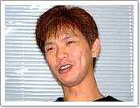
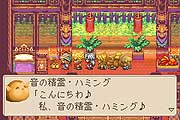
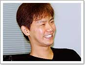
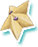

| ▼プレイ時間は何時間くらいですか。 亀岡 普通にプレイして最後のボスを倒す前で30時間くらいですかね。 |
| ▼要素が多いゲームですよね。キャラクターも多いですし、属性も多いですよね。 亀岡 ええ、少し実験的な意味もあるんです。ああいった仕掛けをたくさん入れておけば、やればやるほど楽しくなるはずだと思ったんですね。ちょっと覚えにくいところもあるんですが、２周目、３周目とやってくれる人が多いと思いますし、だんだんプレイしやすくなっていくと思います。 |
| ▼精霊の相性によってバトルの行方が大きく変わりますよね。苦手な精霊に当たると魔法の効果がガーンと減ってしまったり。逆にコンボで効果が８倍とかになったり。 亀岡 それも実験的なものですね。わりと大胆にやったほうがおもしろいんじゃないか、と。 井上 最初に４倍とか８倍とか差をつけたときに、これで本当にゲームになるのかと思いながら作りましたけど、なんとか着地しましたね。 |
| ▼このゲームならではの要素はたくさんあると思うんですが、遊びかたのアドバイスなどあればお願いします。 井上 フィールドの中で精霊を探さないと有利には戦えないんですね。精霊を探すには、まつぼっくりをたくさん拾ったりとか、いろいろなことをやらないといけないんです。ですから、できる限りいろいろなことをやってほしいですね。 |
| ▼寄り道をたくさんしたほうが、ゲームは進めやすいですか？ 井上 そうですね。それから、１回クリアしたあとに隠しダンジョンが発生するんですよ。そこがかなり難易度が高いので、ぜひ挑戦してもらいたいですね。 亀岡 簡単にやろうとすれば、わりと普通にクリアできると思うんです。でも、そのあとにやりこみたい人のために、やりこみの要素がイヤになるくらい詰まっています。まだまだみなさんが見つけていない要素があるかもしれませんよ。また、通信で行なう「レッツアミーゴ」はぜひやってほしいですね。アミーゴシステムを通じて、知らない人とも友だちになれる。それが『マジカルバケーション』の目的でもあるんですよね。 |
| ※『５年３組魔法組』『それゆけ！カッチン』＝どちらも70年代に放映されたテレビドラマ |
|  |
|
||||||||||||||||||||||
|